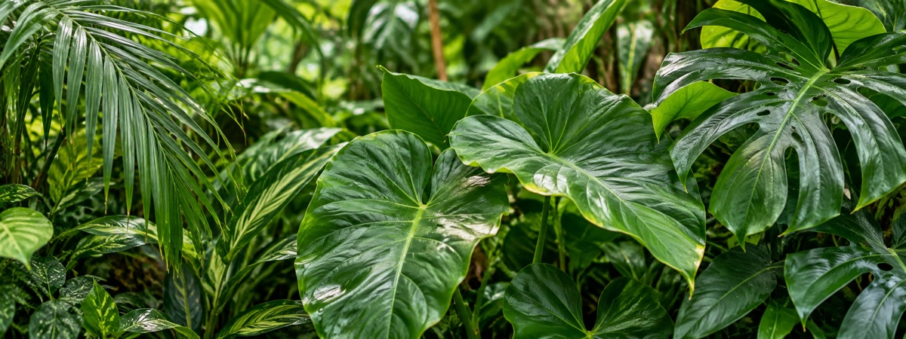
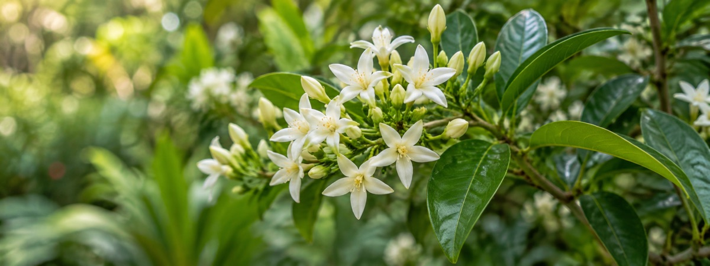
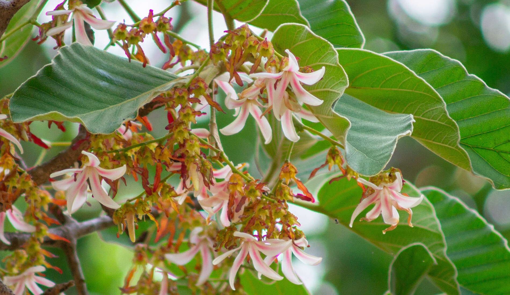
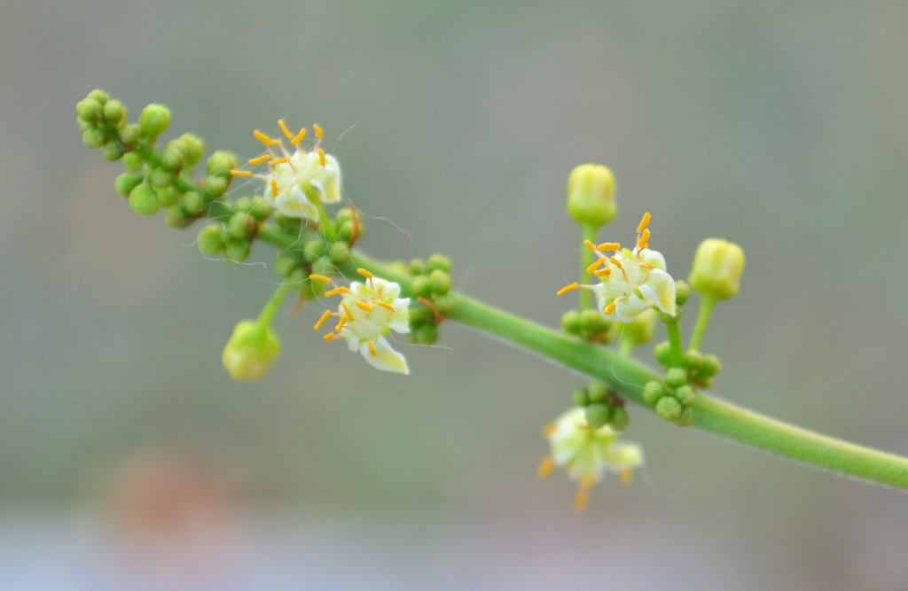
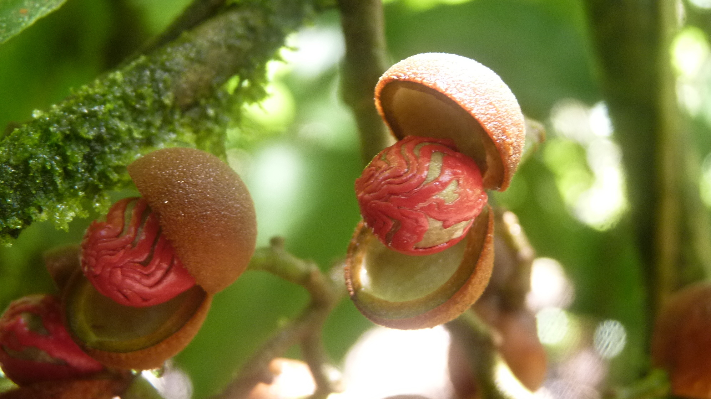

01 · Broad plant group
Families
Plants connected by major structural and evolutionary traits.
Discover the plant kingdom
Follow each branch from a broad plant family to its two selected genera, then discover two individual species within every genus.
Quick summaryChoose a level to open its full page.

01 · Broad plant group
Plants connected by major structural and evolutionary traits.

02 · Two branches per family
Closely related plants grouped within the same family.

03 · Two plants per genus
Individual plant types with their own distinct identity.
Family mapRead left to right: family → genus → species. Select any name for details.

Family 01 · Dipterocarp family
Family 02 · Laurel family

Family 03 · Torchwood family

Family 04 · Nutmeg family